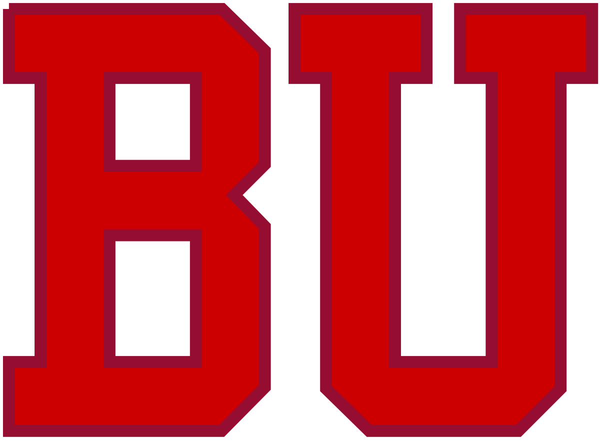

I attended Bucknell University from 2012 to 2016, graduating with a Bachelor of Science degree in physics as well as minors in both math and computer science.
After graduating from Bucknell, I began working as a Technology Specialist at an intellectual property law firm in Boston called Wolf Greenfield. I was a part of the Electrical and Computer Technologies group, working with attorneys at the firm in assisting both hardware and software companies to acquire patents. This consisted of meeting with inventors to understand their technology, drafting patent applications, and helping represent the companies in front of the USPTO to prosecute the patent applications and get the patents issued.
I am currently a candidate for a Master of Science degree in computer science at Boston University. I began the program in the Fall of 2018, and have a target completion date of December of 2019. Throughout my time at BU, I've taken a variety of courses from mathematical classes like Computer Language Theory, Analysis of Algorithms, and Cryptography to engineering courses like Web Application Development, Software Engineering, and Artificial Intelligence.
Jonathan Redwine